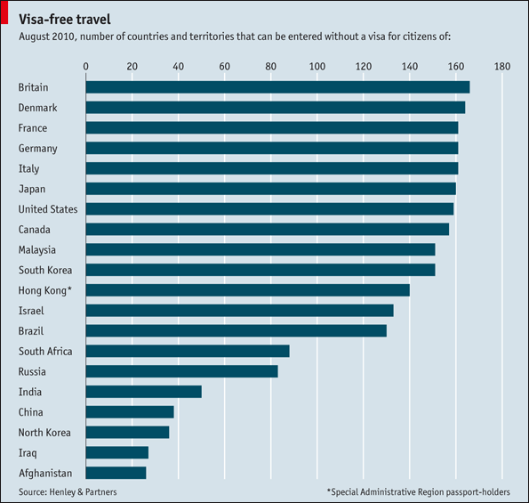

Fri, 03 Sep 2010 18:20:55 · Visa · Countries · Travel
darn it wheres aussie in this list

Darn it! Where’s Aussie in this list?Daily Chart: No Visa required The British have more freedom to travel than any other nation, enjoying unimpeded access to nearly 170 countries.